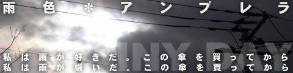
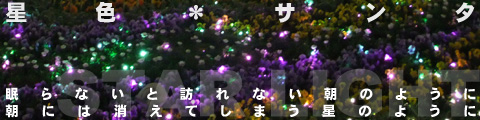
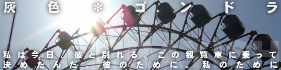
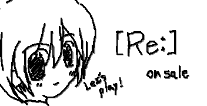

Ghostly Affection
画廊
随笔 / 涂鸦 存放处
恋色＊调色板
按季节分类的12色短篇单元剧作品。目前锐意制作中。
更新 : 2012.09.10
雪华
[Re:]女主角「雪华」的前日谈。转载自capriccio suite旧网站
更新 : 2012.09.14
涂鸦
主要是在旧网站等公开的看板娘(？)及日记用插图等
更新 : 2012.09.10
恋色＊调色板
按季节分类的12色短篇单元剧作品。献给喜欢单恋与被单恋、简称「单恋」的人。
每篇的写法、人物、人称各不相同，可以任意阅读任意顺序。
由于锐意制作中可能会有替换，以下为介绍。
photo by TAKENOHA / tarupito
04月 樱色＊高中 / 05月 空色＊硬币 / 06月 雨色＊雨伞 / 07月 无色＊橡皮
08月 海色＊站台 / 09月 虹色＊机器人 / 10月 月色＊最弱音 / 11月 秋色＊室友
12月 星色＊圣诞老人 / 01月 灰色＊吊舱 / 02月 雪色＊医院 / 03月 恋色＊调色板 / 注释・后记

预览
恋爱之类的东西在自己心中遥不可及、高不可攀，仿佛是别次元的事物。
虽然憧憬，但那感觉接近于「要是能飞就好了」。
眼前的简历像是在证明这个「没有价值的自己」，
只有长处栏怎么也填不满。
不停重复的叹息和转笔。这样的春天 ───

预览
一见钟情了。
见面的瞬间就喜欢上了。理由不明。
但怎么也提不起勇气告白，为了占卜般拼命踩着踏板。
回过神来自行车停在不知名的公园。
在那里我下定了决心。
将自己的命运托付给口袋里的硬币 ───

预览
雨天。我漫无目的地出门。
我想要改变。买了这把伞应该就能改变。
但无论走多远，看到的景色还是老样子，
无论走进哪条小巷，不是死胡同就是熟悉的街道。
知道走路有限度，却又不能坐公交或电车。
那就是现在的我和我的伞 ───

预览
某天，突然出现在自己面前的少女。
那是除自己以外谁也看不见的…也就是幽灵。
为什么她会出现在我面前，为什么只有我能看见…。
但现在我正为更重要的事烦恼。
我爱上了她 ───
04月 / 05月 / 06月 / 07月 / 08月 / 09月 / 10月 / 11月 / 12月 / 01月 / 02月 / 03月 / 注释・后记

预览
被车内冷气和昨天睡眠不足双重夹击，慌忙跳下的车站站台。
那里是每天只有几趟列车、需要耐心等待的慢车停靠站。
眼前展开的海岸线。不见人影的无人车站。
在这种状况下，我忍住想折断显示「圈外」的手机的冲动，
仰望天空想着该怎么办 ───
预览
稍远的未来。存在被人工赋予生命的机器人<机械少女>的世界。
为了让人更理解人类，在进行正式实务训练前，
有在养父母家生活3年的制度。
每年父母角色会更换，每年的表面记忆会被消除。
抱着问题儿童的中学教师、爱上机械的青年、无法保持记忆的老人…
她<机械少女>能得到什么，学到什么呢 ───

预览
「他是天才」
文章的副标题基本已经定了。
接下来只要从他的话中推导出他是天才就行了。
但期待落空了。
「我不是太阳，而是月亮」
天才否定了自己是天才。
那就像是否定了我自己一样。
然而我没有察觉到。
另一份感情已经开始萌芽 ───

预览
「结婚吧」
像口头禅一样嘟囔的他。不回答的我。
和青梅竹马的孽缘今年已是第15年。
旁人看来像恋人般的生活已经持续了2年。
我喜欢他。他应该也不讨厌我。
但彼此都知道。
「我和他」真正喜欢的，绝不是「他和我」 ───
04月 / 05月 / 06月 / 07月 / 08月 / 09月 / 10月 / 11月 / 12月 / 01月 / 02月 / 03月 / 注释・后记

预览
少年相信圣诞老人。
同样也相信「不睡觉的话早晨就不会来」。
对他来说，那是绝对的，是世界的一部分。
圣诞节当天。
当他知道太阳如何升起、星星如何消失的时候 ───

预览
进入观览车。我为了向他告别选择了这个地方。
缓缓上升的吊舱。持续沉默的时间。
我下定决心开口。
为了能再次回到地面，微笑着告别。
相信这是为了我们自己 ───

预览
做了一个长长的梦。一个与少年相遇、被鼓励的梦。
醒来时是在纯白的病房。
慢慢想起「他」已经不在了。
「他」不在了的这个世界上是现实而非梦境。
这意味着什么，我回想起来。
梦中被鼓励的理由。在雪一样白、梦一般的现实中 ───

预览
郊外游乐园人烟稀少的时间段。
享受初春的阳光，坐在平时的固定位置。
然而今天发生了小小的奇迹。
平时这个时间段只是为了载3、4个人而转动的观览车
竟然有超过10组客人上来了。
看似恋人的客人，还像朋友一样的客人。
看着他们各自上车的样子，一边擅自妄想他们的恋爱模样，
我抬头望向观览车 ───
04月 / 05月 / 06月 / 07月 / 08月 / 09月 / 10月 / 11月 / 12月 / 01月 / 02月 / 03月 / 注释・后记
后记
未完成作品本谈不上什么后记，但完成后会有后记，现在姑且算是注释。
暂定标题「季节的某物(暂)」。
将起伏不大、长度和风格都参差不齐的随笔以「享受氛围的背景式作品」为借口整理而成的作品集。
这是约十年前写的作品，由于未能以同人志形式完成，以及为了强化Web内容，
决定在增补修正、替换内容的同时进行刊登。
虽然是给自己用的，想必也没有人在等，但完成还需要相当长时间，请耐心等待。
雪华
故事 : 点击下方图片

后记
这是[Re:]中登场的主人公妹妹雪华酱的前日谈。
作为发售前的特别内容，在capriccio suite [Re:]介绍页面内
刊登了各角色的前后谈，这是从那里转载的。
虽然标为前日谈，但准确来说是游戏中某个时期的内容。
详情请务必游玩游戏。
顺便一提，上面的图片是为本网站制作的。
只是雪与华的印象，与故事情景无关，请谅解。
关于[Re:]请点击这里
涂鸦
顺序杂乱地刊登一些涂鸦。最新的也是5年前左右的了。
使用了D.IKUSHIMA氏的Ugo Tool。
{kind=link}


{kind=link}
